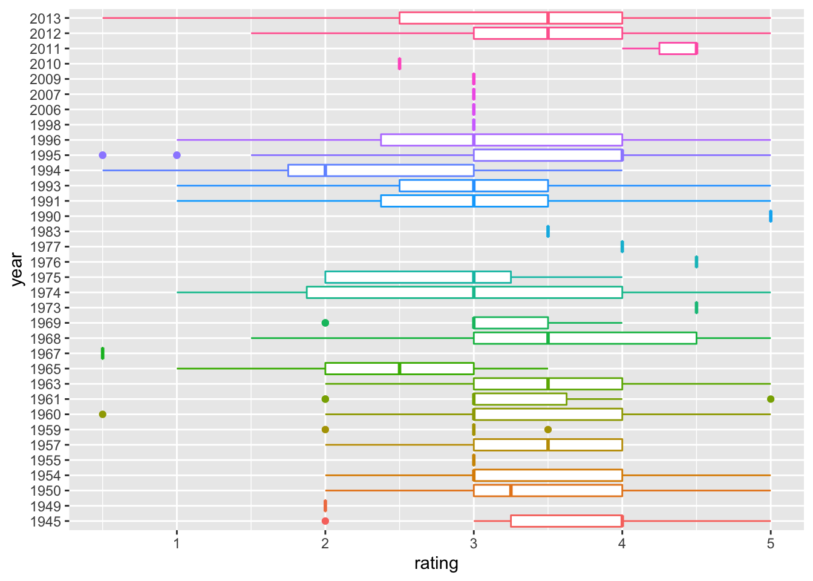

EDA
Yuxuan Wang
11/23/2021
Introduction & Background of data sets
- Dataset source used for EDA analysis: MoiveLens dataset
- MovieLens, a movie recommendation service, provided this dataset (ml-latest-small), which describes 5-star rating and free-text tagging activities. Over 9742 movies, it has 100836 ratings and 3683 tag applications. Between March 29, 1996, and September 24, 2018, 610 people produced this data. On September 26, 2018, this dataset was created.
- The participants were chosen at random. All of the individuals that were chosen had rated at least 20 films. There is no demographic information provided. An id is assigned to each user, and no additional information is supplied.
- The files links.csv, movies.csv, ratings.csv, and tags.csv contain the data. Following are more details on the contents and use of each of these files.
Overview of data sets
- Here, we decided to use “Small” dataset, which includes 100,000 ratings and 3,600 tag applications applied to 9,000 movies by 600 users(Last updated 9/2018).
- Dataset “links.csv” has 3 variables, including movieId(movie ID),imdbId(IMDb ID) and tmdbId(TMDB ID).
- “movies.csv” is a dataset which includes movieId(movie ID), title(movie title) and genres(movie genres). For variable title(movie title), it contains movies like “Toy Story (1995)”, “The Shape of Water (2017)”, “Holy Man (1998)”, “Class (1983)”,etc. The variable genres(movie genres) includes genres like Comedy, Drama, Sci-Fi, Horror, Thriller,etc.
- In “ratings.csv” dataset, there are 4 variables. userId represent the user ID, movieId represent movie ID, rating represent the ratings of movies, and timestamp represent a digital record of the time of occurrence of a particular movie. Last but not the least, rating represent the ratings of movies. The rating variable includes score like 0.5, 2, 3, 4, 4.5, 5,etc.
- Dataset “tag.csv” has 4 variables, including userId(user ID),movieId(movie ID),tag(tag of movies) and timestamp(digital record of the time of occurrence of a particular movie). The variable tag includes tags like funny, brit-pop, wedding, revenge,etc.
- In our Exploratory Analyses, we mainly focus on the following datasets :“ratings.csv”and “movies.csv”.
Summary of the used packages and dependencies
- tidyverse, readr, ggplot2, kableExtra, pastecs, ggpubr, tm.
knitr::opts_chunk$set(echo = TRUE)
library(tidyverse)
library(readr)
library(ggplot2)
library(kableExtra)
library(pastecs)
library(ggpubr)
library(tm)
Overview of dataset “ratings.csv”
Here, we applied the “summarise()” function to briefly describe the variable “rating”: According to the result, variable rating show that the minimum is 0.5, the first quantile is 3,median is 3.5,mean is 3.502,third quantile is 4 and the maximum is 5.
Since userid ,movieid,timestamp only represent the ID of users, id of movies respectively,and digital record of the time of occurrence of a particular movie, we choose not to analyze those three variables
data_path = "./data/small/ratings.csv"summary_df =
read_csv(data_path, col_types = "ccnc") %>%
janitor::clean_names() %>%
summary(summary_df$rating) %>%
knitr::kable() %>%
kable_styling(bootstrap_options = c("striped")) %>%
kableExtra::kable_styling(font_size = 12)
summary_df| user_id | movie_id | rating | timestamp | |
|---|---|---|---|---|
| Length:100836 | Length:100836 | Min. :0.500 | Length:100836 | |
| Class :character | Class :character | 1st Qu.:3.000 | Class :character | |
| Mode :character | Mode :character | Median :3.500 | Mode :character | |
| NA | NA | Mean :3.502 | NA | |
| NA | NA | 3rd Qu.:4.000 | NA | |
| NA | NA | Max. :5.000 | NA |
Overview of dataset “movies.csv”
- We count the 5 most appeared genres and made a table : Drama appeared 4361 times,1st place. Comedy appeared 3756 times, 2nd place. Thriller appeared 1894 times, 3rd place. Action appeared 1828 times, 4th place.Romance appeared 1596 time, 5 th place._
- We count the 5 most appeared year of the movie released, and made a table:2006 appeared 733 times,1st place. 2009 appeared 719 times, 2nd place. 2005 appeared 709 times, 3rd place. 2002 appeared 705 times, 4th place. 2008 appeared 691 time, 5 th place.
data_path = "./data/small/movies.csv"
movie_descriptive =
read_csv("./data/small/movies.csv") %>%
janitor::clean_names() %>%
separate(
title, c("name", "year"), sep="\\s+(?=\\S*$)") %>%
separate_rows(genres, sep = "[|]")
genres_count =
movie_descriptive %>%
group_by(genres) %>%
count(genres) %>%
filter(n >= 1500) %>%
arrange(desc(n)) %>%
knitr::kable() %>%
kable_styling(bootstrap_options = c("striped"))
genres_count| genres | n |
|---|---|
| Drama | 4361 |
| Comedy | 3756 |
| Thriller | 1894 |
| Action | 1828 |
| Romance | 1596 |
year_count =
movie_descriptive %>%
group_by(year) %>%
count(year) %>%
filter(n >= 690) %>%
arrange(desc(n)) %>%
knitr::kable() %>%
kable_styling(bootstrap_options = c("striped")) %>%
kableExtra::kable_styling(font_size = 12)
year_count| year | n |
|---|---|
|
|
733 |
|
|
719 |
|
|
709 |
|
|
705 |
|
|
691 |
Find popular movies and high-rating movies
- Find popular movies and high-rating movies : In order to find the top 5 popular movies with highest rating, we filtered movies with rating less than 5, and count the 5 most rated movies. The Shawshank Redemption (1994) is the most popular movie, which has 153 times user rating. No.2 Pulp Fiction (1994), has 123 times user rating. 116 times user rating, Forrest Gump (1994) wins the 3rd popular place. The Matrix (1999) has 109 times user rating,and is the fourth place among the top 5 popular movies. No. 5 is Star Wars: Episode IV - A New Hope (1977), and it has 104 times user rating. We also find out that among those 5 most rated movies and highest rating movies, genres with tag drama appears the most(3 times, appear in Forrest Gump (1994), Pulp Fiction (1994),The Shawshank Redemption (1994)). We also find out one interesting fact is that among the 5 most popular movies and 5 highest rating movies, 3 movies are released in 1994; 4 movies are released in the 90s.
data_path = "./data/small/ratings.csv"
rating_tidy =
read_csv(data_path, col_types = "ccnc") %>%
janitor::clean_names() %>%
select(-timestamp) %>%
mutate(rating = as.double(rating))
high_rating =
rating_tidy %>%
filter(rating == 5.0)
movie_names =
read_csv("./data/small/movies.csv") %>%
rename(movie_id = movieId)high_rating_movienames =
merge(high_rating, movie_names) %>%
group_by(title, genres,rating) %>%
count(movie_id) %>%
filter(n >= 100) %>%
select(n,title,genres,rating) %>%
ungroup(title, genres,rating) %>%
arrange(desc(n)) %>%
separate(
title, c("name", "year"), sep="\\s+(?=\\S*$)") %>%
knitr::kable() %>%
kable_styling(bootstrap_options = c("striped")) %>%
kableExtra::kable_styling(font_size = 12)
high_rating_movienames | n | name | year | genres | rating |
|---|---|---|---|---|
| 153 | Shawshank Redemption, The |
|
Crime|Drama | 5 |
| 123 | Pulp Fiction |
|
Comedy|Crime|Drama|Thriller | 5 |
| 116 | Forrest Gump |
|
Comedy|Drama|Romance|War | 5 |
| 109 | Matrix, The |
|
Action|Sci-Fi|Thriller | 5 |
| 104 | Star Wars: Episode IV - A New Hope |
|
Action|Adventure|Sci-Fi | 5 |
Find the average rating of each genres in different year
- Find the average rating of each genres in different year: In 1902, the average ratings for genres Action, Adventure, Fantasy, Sci-Fi are all 3.5. In 1903, the average ratings for genres Crime and Western are both 2.5. The averages for genres Animation, Comedy, Sci-Fi in 1908 are all 4.0. The genre Drama’s average ratings in 1915 is 2.0.
movie_names_ave =
read_csv("./data/small/movies.csv") %>%
rename(movie_id = movieId) %>%
separate(
title, c("name", "year"), sep="\\s+(?=\\S*$)") %>%
separate_rows(genres, sep = "[|]") %>%
filter(!genres %in% "(no genres listed)") filter_ratingscore =
rating_tidy
ave_rating =
merge(filter_ratingscore, movie_names_ave) %>%
group_by(year,genres) %>%
summarize(mu_rating = mean(rating)) %>%
head(10) %>%
knitr::kable() %>%
kable_styling(bootstrap_options = c("striped")) %>%
kableExtra::kable_styling(font_size = 12)
ave_rating| year | genres | mu_rating |
|---|---|---|
|
|
Action | 3.5 |
|
|
Adventure | 3.5 |
|
|
Fantasy | 3.5 |
|
|
Sci-Fi | 3.5 |
|
|
Crime | 2.5 |
|
|
Western | 2.5 |
|
|
Animation | 4.0 |
|
|
Comedy | 4.0 |
|
|
Sci-Fi | 4.0 |
|
|
Drama | 2.0 |
Rating distribution among different genres
- The boxplot regarding ratings and genres shows: The spread of the ratings of War, Mystery,Horror and Crime are larger comparing to the other ratings of genres. All of ratings have outliers around either 1.0 point or 0.5 point. The ratings of genres Film-Noir and documentary have outliers at 1.5 points.We can also conclude that the mean of the ratings of genres like Thriller,sci-fi, Romance, Musical, Horror, Fantasy, Comedy, Children, Adventure and Action all equal to 3.5. The mean of the ratings of genres include Western, War, Mystery, IMAX, Film-Noir, Drama, Documentary, Crime and Animation all equal to 4.
movie_names =
read_csv("./data/small/movies.csv") %>%
rename(movie_id = movieId) %>%
separate(
title, c("name", "year"), sep="\\s+(?=\\S*$)")
filter_ratingscore =
rating_tidy boxplot_df =
merge(filter_ratingscore, movie_names) %>%
janitor::clean_names() %>%
separate_rows(genres, sep = "[|]") %>%
filter(!genres %in% "(no genres listed)") %>%
ggplot(aes(x = rating, y = genres)) + geom_boxplot(aes(color = genres, alpha = .5)) +
theme(legend.position="none")
viridis::scale_color_viridis(discrete = TRUE)
boxplot_df 
Rating distribution among different years
- The boxplot regarding ratings and year shows: Since this dataset include too much year, we choose to show only part of the boxplot regarding year and rating. According to the boxplot, we can conclude that the rating of years including 2010, 2009, 2007,2006 and 1998 have the least rating data records. There is no obovious trend shown in the plot.
movie_names =
read_csv("./data/small/movies.csv") %>%
rename(movie_id = movieId) %>%
separate(
title, c("name", "year"), sep="\\s+(?=\\S*$)") boxplot_df2 =
merge(filter_ratingscore, movie_names) %>%
mutate(
year = removePunctuation(year)
) %>%
head(1000) %>%
ggplot(aes(x = rating, y = year)) + geom_boxplot(aes(color = year))+
theme(legend.position="none")
viridis::scale_fill_viridis(discrete = TRUE)
boxplot_df2 
Kruskal-Wallis Test regarding user ID and rating
- Here, we want to do a test to determine whether there are any statistically significant differences between the mean ratings of the user from the 600 users are different(ANOVA)
- First, we checked whether the rating is normally distributed.
ggplot(filter_ratingscore, aes(x = rating, y = ..density..)) +
geom_histogram(alpha = 0.3, bins = 30) 
- The plot shows that the rating is not normally distributed, we need to use non parametric test.
- Thus, we used the Kruskal-Wallis Test regarding user ID and rating.
- The Kruskal-Wallis H test (also known as the “one-way ANOVA on ranks”) is a rank-based nonparametric test that may be used to see if two or more groups of an independent variable on a continuous or ordinal dependent variable have statistically significant differences. It is the nonparametric counterpart of the one-way ANOVA (Kruskal-Wallis H Test in SPSS Statistics | Procedure, output and interpretation of the output using a relevant example., 2021)
Assumption
\(H_0:\mu_{0}=\mu_1=\mu_2=\mu_3=...=\mu _x\)
\(H_1: \text{At least two of the mean ratings of the users are different}\)
kruskal.test(rating ~ user_id, data = filter_ratingscore) %>%
broom::tidy() %>%
kableExtra::kbl() %>%
kable_styling(bootstrap_options = c("striped")) %>%
kableExtra::kable_styling(font_size = 12)| statistic | p.value | parameter | method |
|---|---|---|---|
| 20676.72 | 0 | 609 | Kruskal-Wallis rank sum test |
Notice: The p values here is less than 2.2e-16 and is too small to be shown in r. Thus,the p value shown in table here is 0.
- Conclusion:At 0.05 significance level, we reject the null hypothesis and conclude that at least two of the mean ratings of the user from the 600 users are different.